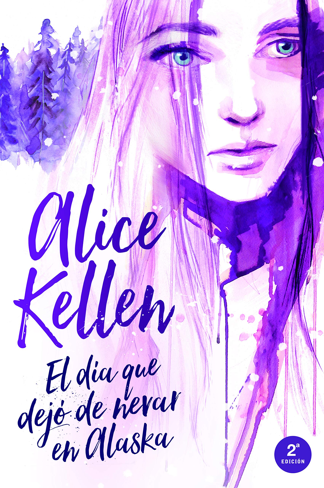

Biografia de Alice Kellen
Alice Kellen nació en Valencia en 1989. Es una joven promesa de las letras españolas que acostumbra a vivir entre los personajes,
las escenas y las emociones que plasma en el papel. Es autora de las novelas Sigue lloviendo, El día que dejó de nevar en Alaska,
33 razones para volver a verte, 23 otoños antes de ti, 13 locuras que regalarte, Llévame a cualquier lugar, El chico que dibujaba constelaciones,
la bilogía Deja que ocurra: Todo lo que nunca fuimos y Todo lo que somos juntos, Nosotros en la luna y Las alas de Sophie.
Libros de la autora
Todo lo que nunca fuimos: Deja que ocurra 1
Primera parte de la bilogía "Deja que ocurra" de Alice Kellen: Leah está rota. Leah ya no pinta. Leah es un espejismo desde el accidente que se llevó a sus padres.
Axel es el mejor amigo de su hermano mayor y, cuando accede a acogerla en su casa durante unos meses, quiere ayudarla a encontrar y unir los pedazos de la
chica llena de color que un día fue. Pero no sabe que ella siempre ha estado enamorada de él, a pesar de que sean casi familia, ni de que toda su vida está a
punto de cambiar. Porque ella está prohibida, pero le despierta la piel. Porque es el mar, noches estrelladas y vinilos de los Beatles.
Porque a veces basta un "deja que ocurra" para tenerlo todo.

Nosotros en la luna
Tras el éxito de Deja que ocurra vuelve Alice Kellen con una novela que te enamorará Una noche en París. Dos caminos entrelazándose.
No hay nada más eterno que un encuentro fugaz. Cuando Rhys y Ginger se conocen en las calles de la ciudad de la luz, no imaginan que sus vidas se
unirán para siempre, a pesar de la distancia y de que no puedan ser más diferentes. Ella vive en Londres y a veces se siente tan perdida que se ha olvidado
hasta de sus propios sueños. Él es incapaz de quedarse quieto en ningún lugar y cree saber quién es. Y cada noche su amistad crece entre emails
llenos de confidencias, dudas e inquietudes. Pero ¿qué ocurre cuando el paso del tiempo pone a prueba su relación? ¿Es posible colgarse de la luna junto a
otra persona sin poner en riesgo el corazón? Una historia sobre el amor, el destino y la búsqueda de uno mismo. Porque a veces, solo hace falta mirar la luna
para sentirte cerca de otra persona.
Todo lo que somos juntos: Deja que ocurra 2
Tras el éxito de Todo lo que nunca fuimos llega el desenlace de la Bilogía "Deja que ocurra". ¿Qué pasará con Axel y Leah?
Han pasado tres años desde la última vez que se vieron. Ahora, Leah está a punto de cumplir su sueño de exponer en una galería.
Y, pese al pasado, Axel necesita formar parte de un momento como ese. Cuando sus caminos vuelven a cruzarse, Leah tiene que tomar decisiones
que pueden cambiarlo todo, porque, a pesar de lo que ocurrió, los recuerdos de toda su vida siguen ahí; intactos, bonitos, únicos.
Colándose en cada grieta que aún no ha cerrado. Porque él sigue siendo el chico que aún no ha olvidado. Porque es el mar, noches estrelladas y
vinilos de los Beatles. Porque a veces basta un "deja que ocurra" para tenerlo todo.

El dia que dejo de nevar en alaska
Un chico con el corazón de hielo. Una chica que huye de si misma. Dos destinos que se cruzan. Heather cree que solo hay tres cosas que sabe hacer:
atraer problemas, salir huyendo y correr. Asi es como termina en Alaska, en un pequeño pueblo perdido, trabajando de camarera mientras intenta llevar
una vida nueva y tranquila. Su unico problema es que uno de los dueños del restaurante parece odiarla y que ella nunca antes ha conocido a nadie que
despierte tanto su curiosidad. Nilak es reservado, frio y distante, pero Heather puede ver a traves de todas las capas tras las que se esconde y sabe que
en ocasiones hay recuerdos que pesan demasiado; como los de sus propios errores, esos que intenta dejar atras. Pero, a veces, la vida te da una segunda oportunidad.
La nieve empieza a derretirse. Y todo encaja.
33 Razones Para Volver a Verte
Mike, Rachel, Luke y Jason han sido amigos inseparables desde pequeños. Pero sus caminos se alejaron cuando Rachel cometió el error de enamorarse
del chico equivocado, Mike, que terminó traicionando a la única persona que siempre estuvo dispuesta a arriesgarlo todo por él. Cinco años después,
el destino vuelve a unirlos; pero ahora Rachel ha cambiado, es tan arisca como su gato Mantequilla y ya no se permite confiar en nadie.
Por eso, a pesar de estar a punto de ser desahuciada, lo último que desea es dejarse convencer para mudarse con ellos. ¿Cómo podría mantener su corazón
intacto y a salvo viviendo bajo el mismo techo que Mike? Sabe que esconde secretos y que su mirada gris es capaz de despertar todos los recuerdos que ella
lleva tanto tiempo intentando olvidar.

El chico que dibujaba constelaciones
Esta es una historia de amor, de sueños y de vida. La de Valentina. La chica que no sabía que tenía el mundo a sus pies, la que creció y empezó a pensar en imposibles.
La que cazaba estrellas, la que anhelaba más, la que tropezó con él. Con Gabriel. El chico que dibujaba constelaciones, el valiente e idealista, el que confió en las palabras
"para siempre", y creó los pilares que terminaron sosteniendo el pasado, el ahora, lo que fueron y los recuerdos que se convertirán en polvo.
"Esta novela es lo más bonito que he podido leer en mucho tiempo. Me ha parecido un regalo, un soplo de vida... Y todo contado con tanta delicadeza que es precioso leerlo.
Solo podría hacerlo Alice. Mil gracias por regalarnos a Valentina y a Gabriel, por su vida. No he podido ser más feliz leyéndolos